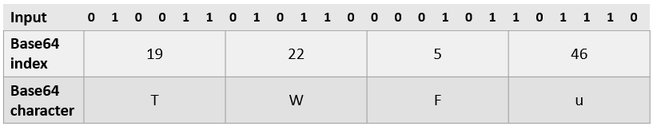
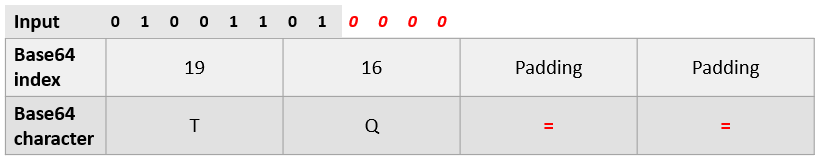

Base64 encoding is not a cryptographic primitive and does not provide any confidentiality protection. It is simply a convenient way to encode binary data in a human-readable format using 64 characters. As a result, each character in Base64 effectively encodes 6-bits of binary input at a time. It is often used to store cryptographic key material in a readable format. The array of characters used in the Base64 encoding scheme is shown below. 6-bits of binary input are used as an index into the array to produce the encoded character (e.g. 6-bits of 0 would encode as the character 'A' in Base64.
ABCDEFGHIJKLMNOPQRSTUVWXYZabcdefghijklmnopqrstuvwxyz0123456789+/
Base64 encodes 3 bytes of input at a time (e.g. 24 bits) and produces 4 bytes of output. An example encoding is shown below.

When the amount of input is not a multiple of 3, Base64 will pad the input with '0's until the next character can be encoded, then pads the output with the special character '=' to denote the end of the input. An example is shown below.

Log into your Kali VM. Then, begin by attempting to encode 3 null bytes. As this represents 24-bits of 0, the Base64 encoding will result in 4 characters of 'A'. In the command line, we can use echo to generate these null-bytes given their hexadecimal encoding. Then, the output can be piped into the input of the openssl command to encode the payload. Run the command to see the encoding.
echo -ne '\x0\x0\x0' | openssl enc -base64We can also do the same using a Python script via the command below which takes a raw byte string representing a single null b"\x00", multiplying it by 3, and writing it out to the system's standard output. Run the command below and see it produces the same output.
python3 -c 'import sys; sys.stdout.buffer.write(3*b"\x00")' | openssl enc -base64One will often be encoding and decoding into a file. Use the command below to write our original null bytes to a file called input.txt .
python3 -c 'import sys; sys.stdout.buffer.write(3*b"\x00")' > input.txtThen, use the openssl command to encode the file. Note we pass in the -A flag in openssl to suppress the newline it typically adds to its output.
openssl enc -base64 -A -in input.txt -out output.txtUse xxd to examine the encoded output. xxd has 3 main columnar sections, the first is the location in the file a line of bytes resides (e.g. the byte offset). The second section consists of the bytes in hexadecimal format. The last is the representation of the bytes as ASCII characters (with a '.' shown for non-printable characters).
xxd output.txtWe can decode the output using the -d flag. Perform the command below to Base64 decode the file and store the result in decode.txt. Then use xxd to ensure the original null bytes are recovered.
openssl enc -base64 -A -d -in output.txt -out decode.txt
xxd decode.txtUsing the knowledge gained, generate an input.txt file that has the following 6 bytes in it '\x00\x01\x02\x03\x04\x05'. Then, Base64 encode the file into output.txt. View the file using xxd. It should contain 8 characters.
xxd output for your lab notebook indicating the 8 characters.Then, take the Base64-encoded string "ABCDEFGH" and find the original input bytes it represents. Store the results into input.txt. View the file using xxd. It should contain 6 bytes.
xxd output for your lab notebook indicating the 6 bytes.Finally, cleanup.
rm input.txt output.txt decode.txtCryptographic hash functions are used to ensure the integrity of data and typically emit a fixed-length output regardless of the size of the input given. Some of the most important properties of such functions are their pre-image resistance, collision resistance, and their ability to act as pseudo-random functions. With pre-image resistance, it is difficult to determine the input that has generated a particular hash output. With collision resistance, it is difficult to generate two distinct inputs that have the same hash output. With pseudo-randomness, the probability that a bit of a hash output flips when a bit of the input does, is 50%. There are several hash functions in use today, including deprecated ones that should not be used (md5, SHA-1) and modern ones such as SHA-256. Use the command below to generate the SHA-256 hashes for password and Password and examine their hashes. The command sends each string to the hash command via the | operator.
echo -n 'Password' | openssl dgst -sha256
echo -n 'password' | openssl dgst -sha256Note that to just print the hashes, we can send the output to an awk command as shown below.
echo -n 'Password' | openssl dgst -sha256 | awk '{print $2}'Even though the two inputs differ by a single bit, the hash outputs are completely different. Unfortunately, such well known strings are often used as actual passwords and their hashes are also well-known. Visit https://crackstation.net/ and enter each hash value into the interface to search for them on the site.
Use the site to search for the following hashes:
0d107d09f5bbe40cade3de5c71e9e9b7 cbfdac6008f9cab4083784cbd1874f76618d2a97 65e84be33532fb784c48129675f9eff3a682b27168c0ea744b2cf58ee02337c5
Hash functions used to store password hashes are typically salted with additional data in order to prevent dictionary and rainbow table attacks. The salt is often appended to the password to generate the hash. The salt and the subsequent hash are then stored so they can be used to validate passwords subsequently. Add the salt value "12345" to the password and hash it. Then look up the hash on https://crackstation.net.
echo -n '12345:password' | openssl dgst -sha256Note that, because of the speed of SHA-256, it is typically not used in password hashing since brute-force attacks are still feasible using it. Instead, password hashes employ 'hash stretching' in which multiple iterations of the hash function are applied to generate the output hash. One such scheme is PBKDF2. Use the commands below to measure the total execution time of the SHA-256 and the PBKDF2 hashes using a variety of iterations to see how PBKDF2 impacts the speed of the hash. Note that, the suggested number of iterations to use is 31,000 for the scheme.
time (echo -n '12345:password' | openssl dgst -sha256)
time (echo -n 'password' | openssl enc -aes128 -k 1 -pbkdf2 -iter 31000 | xxd)
time (echo -n 'password' | openssl enc -aes128 -k 1 -pbkdf2 -iter 310000 | xxd)While salting password hashes and employing hash stretching can make things difficult for an adversary that has managed to obtain password hashes of users, neither can help much when users choose weak passwords. Tools such as John (the Ripper) and hashcat employ both GPU acceleration and password lists to easily crack hashes of weak passwords. In the following steps, we will be demonstrating how tools are used to crack passwords.
One of the first issues one faces when attempting to crack a hash via a dictionary is to identify the hash algorithm being used. As hash function design has been improved, there are now a multitude of different algorithms being used in practice. The documentation of hashcat lists the different formats that it supports, specified as "hash-modes". Perform a "man hashcat" and examine the different hash types that one can specify via the -m <hash type> flag.
On Linux, password hashes are typically stored in /etc/shadow . An administrator can configure the password hash algorithm used via the Privileged Access Management daemon (pamd), selecting from any number of different hashing algorithms.
Bring up the Kali VM and search /etc/shadow to find the password entry for the guest account. The entry consists of colon-separated fields in which the password hash is the second field. Copy the hash for the guest account and search for it on https://crackstation.net. You may also use the shortcut command-line method below to print out the hash and save it to a file.
sudo egrep guest /etc/shadow | awk -F: '{print $2}' | tee guest_hash.txtAs a result of the built-in salting that is being done with the hash, the search fails.
hashid is a tool that applies heuristics to allow us to guess what kind of hashing algorithm is being used to store the hash. For some hashes, the encoding itself explicitly identifies the algorithm being used. Save the password hash from the guest account to a file called guest_hash.txt. Then, run the hashid command on it.
hashid guest_hash.txtAnswer the following questions:
Now that we have identified the hash type of the guest account's password hash, we can now employ the same brute force attack adversaries perform to crack them. One of the most common wordlists that is used to crack password hashes is the corpus of actual plaintext passwords that were dumped as part of the infamous RockYou breach. On the Kali VM, this list of passwords can be found at /usr/share/wordlists/rockyou.txt. Perform the command below to view the first ten lines of the file.
head -10 /usr/share/wordlists/rockyou.txtwc command, find the number of passwords in the file.The hashcat tool utilizes GPU acceleration and parallelization to perform password hash cracking using such lists within seconds. If the password that generated a particular hash is included in rockyou.txt corpus, it can be broken easily just from its hash. Note that although we use hashcat in these examples, you can also utilize John the Ripper (john) to perform the same cracking operations.
The guest account's password is one of the passwords in rockyou.txt and we have discovered the algorithm used in the prior step. Examine the documentation of the hashcat command to find the hash type associated with the algorithm.
man hashcatThen, supply it in the -m parameter below and crack the password hash.
hashcat -m <FMI> ./guest_hash.txt /usr/share/wordlists/rockyou.txtUse the --show flag to view the password which has been appended to the hash after a colon.
hashcat -m <FMI> --show ./guest_hash.txtValidate the password by switching to the guest account
su - guestThen, perform an id command to find the account's information
idExit out of the guest account, but remember the account's password for a later step.
The previous section demonstrated the use of hashid and hashcat to successfully identify the format of a hash and to crack it using a list of passwords. In this section, you are given hashes from the hash types we previously had you identify.
Using hashid and hashcat, find the hash type and the password associated with the following hash. Hint: You will need to bring up the man page for hashcat and find the mode specifying HMAC with a salt on the appropriate version of SHA.
f177e457665b8d8dc06ad1652e1e1769dc9d8985:brucehashcat output showing the hash and the passwordUsing hashid and hashcat, find hash type and the password associated with the following hash:
edc8bf02b680111bc0779e7c2e2b4eb3hashcat output showing the hash and the passwordUsing hashid and hashcat, find hash type and the password associated with the following hash:
c9344c5f1079f7ce9b007e604829f7e8e4516e9132e098ebd58e2cc7f2a5fd4chashcat output showing the hash and the passwordUsing hashid and hashcat, find hash type and the password associated with the following hash:
$6$xmen$4ElqgJvKoYyAJ4ccK8wTQXvAfw5gvZI3pQCosX9tvf3Tz8q8klYIlfBUOPUVtkmVpigiJsr4ESpmQffW84NvE0hashcat output showing the hash and the passwordDue to the insecurity of username/password authentication, ssh supports the ability to use asymmetric encryption to perform key-based authentication. A user generates a public key and private key pair, places the public key on the server and then uses the private key on the client to authenticate itself subsequently. To protect the private key on the client from unauthorized use, however, ssh encrypts the private key with a hash of a passphrase that the user provides during the creation of the keypair. Users unlock the key for use by supplying the passphrase that can then be hashed, with the subsequent hash being used to decrypt the private key. Like passwords, weak ssh passphrases are easily broken.
John the Ripper provides a script ssh2john.py for converting a passphrase-protected ssh private key into a hash that can then be subject to a brute-force dictionary attack similar to our prior hashcat examples. On the Kali VM, become the guest user for this exercise.
su - guestThe guest account has an ssh key located in .ssh/id_rsa with its associated public key in .ssh/id_rsa.pub. The public key has been added as an authorized key to log into an account called keyonly on the VM. However, in order to utilize the key, one must first supply the passphrase. Begin by attempting to perform the ssh as keyonly. Since we do not know the passphrase for the ssh key nor the password for the keyonly account, you are unable to login, this step will fail.
ssh keyonly@localhostPassphrase-protection for ssh keys are done similarly to password hashes. We can convert the mechanism used for protecting the key into an equivalent hash using the ssh2john tool via the command below.
python3 /usr/share/john/ssh2john.py ~/.ssh/id_rsa > id_rsa.hashThen, we can run John the Ripper on the hash file using the rockyou.txt list for the candidate passphrases. Given the size of the list, it may take several minutes to complete the operation.
john --wordlist=/usr/share/wordlists/rockyou.txt id_rsa.hashThen, show the results of the cracking operation to obtain the passphrase.
john --show id_rsa.hashFinally, repeat the ssh command to login as keyonly. Enter the passphrase to unlock the private key to successfully login.
ssh login to the keyonly account.Clean up by removing the hash file and exiting out of the shell.
rm id_rsa.hash
exit